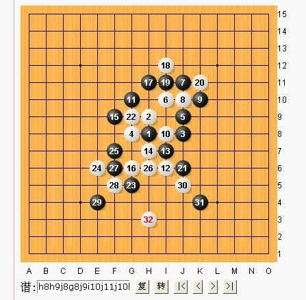

第12届世界连珠锦标赛AT第四轮<混混 VS 曹冬>
#1 第12届世界连珠锦标赛AT第四轮<混混 VS 曹冬>作者：潇洒 发表时间：2011-8-5 21:40:22
=======上图对应的爱五子棋谱代码如下，以便你拆解：========
h8
======================================================
#2 Re:第12届世界连珠锦标赛AT第四轮<混混 VS 曹冬>作者：白河愁 发表时间：2011-8-5 21:41:52
沙发［ 潇洒 于 2011-8-5 21:42:51 时花20金币送鲜花一朵］
#3 Re:第12届世界连珠锦标赛AT第四轮<混混 VS 曹冬>作者：白河愁 发表时间：2011-8-5 21:41:59
板凳#4 Re:第12届世界连珠锦标赛AT第四轮<混混 VS 曹冬>作者：白河愁 发表时间：2011-8-5 21:42:07
地毯！#5 Re:第12届世界连珠锦标赛AT第四轮<混混 VS 曹冬>作者：雅匪 发表时间：2011-8-5 21:44:00
狠真诚的挣10个金币#6 Re:第12届世界连珠锦标赛AT第四轮<混混 VS 曹冬>作者：文英 发表时间：2011-8-5 21:44:22
潜艇。。
#7 Re:第12届世界连珠锦标赛AT第四轮<混混 VS 曹冬>作者：炫飞冰弦 发表时间：2011-8-5 21:47:35
神八#8 Re:第12届世界连珠锦标赛AT第四轮<混混 VS 曹冬>作者：梧桐风 发表时间：2011-8-5 21:48:25
应该写上第四轮嘛，其他对局也可以贴进来~
#9 Re:第12届世界连珠锦标赛AT第四轮<混混 VS 曹冬>作者：忧郁的双眼 发表时间：2011-8-5 21:49:19
地窖 挖掘中~~~~~~#10 Re:第12届世界连珠锦标赛AT第四轮<混混 VS 曹冬>作者：雨一直下 发表时间：2011-8-5 21:50:20
直升机高空围观
#11 Re:Re:第12届世界连珠锦标赛AT第四轮<混混 VS 曹冬>作者：炫飞冰弦 发表时间：2011-8-5 21:50:31
引用：挖完通知我，我给你盖上
原文由 忧郁的双眼 发表于 2011-8-5 21:49:19 :
地窖 挖掘中~~~~~~
#12 Re:第12届世界连珠锦标赛AT第四轮<混混 VS 曹冬>作者：忧郁的双眼 发表时间：2011-8-5 21:52:14
我是给冰阿姨挖的 冬天的土豆大白菜买上几百市斤屯了#13 Re:第12届世界连珠锦标赛AT第四轮<混混 VS 曹冬>作者：隐藏菜系 发表时间：2011-8-5 21:52:37
前排坐定！#14 Re:第12届世界连珠锦标赛AT第四轮<混混 VS 曹冬>作者：罔两 发表时间：2011-8-5 21:52:59
楼上的，捏们明显是再赚回帖G嘛？我很鄙视你们~~一个铁公鸡，一个大款！！#15 Re:第12届世界连珠锦标赛AT第四轮<混混 VS 曹冬>作者：潇洒 发表时间：2011-8-5 21:54:08
| Black: | Cao Dong | ||
White: | Huang Jinxian |
=======上图对应的爱五子棋谱代码如下，以便你拆解：========
h8h9j8g8j9
======================================================
#16 Re:第12届世界连珠锦标赛AT第四轮<混混 VS 曹冬>作者：潇洒 发表时间：2011-8-5 21:54:35
| Black: | Artemiev Sergey | ||
White: | Dai Xiaohan |
=======上图对应的爱五子棋谱代码如下，以便你拆解：========
h8i9h7
======================================================
#17 Re:第12届世界连珠锦标赛AT第四轮<混混 VS 曹冬>作者：松痕 发表时间：2011-8-5 21:54:40
又见金星。。。。。
［ 丸子.net 于 2011-8-5 21:55:13 时花250金币拍了你一板砖］
#18 Re:第12届世界连珠锦标赛AT第四轮<混混 VS 曹冬>作者：怪 发表时间：2011-8-5 21:55:08
 ...
...#19 Re:第12届世界连珠锦标赛AT第四轮<混混 VS 曹冬>作者：潇洒 发表时间：2011-8-5 21:55:28
| Black: | Sushkov Vladimir | ||
White: | Oll Aivo |
=======上图对应的爱五子棋谱代码如下，以便你拆解：========
h8h9i9i8i11g7
======================================================
#20 Re:第12届世界连珠锦标赛AT第四轮<混混 VS 曹冬>作者：怪 发表时间：2011-8-5 21:59:22
坐等Sushkov Vladimir杯具#21 Re:第12届世界连珠锦标赛AT第四轮<混混 VS 曹冬>作者：松痕 发表时间：2011-8-5 22:03:26
renju.net 非常拥挤。#22 Re:第12届世界连珠锦标赛AT第四轮<混混 VS 曹冬>作者：罔两 发表时间：2011-8-5 22:03:41
同上！！ 等悲剧~~#23 Re:第12届世界连珠锦标赛AT第四轮<混混 VS 曹冬>作者：忧郁的双眼 发表时间：2011-8-5 22:04:45
还好只买了一千金不然买和的人赚大发了［ 三国老凯 于 2011-8-5 22:53:52 时花20金币送鲜花一朵］
#24 Re:第12届世界连珠锦标赛AT第四轮<混混 VS 曹冬>作者：明年近日 发表时间：2011-8-5 22:08:51
不见得会和棋，说不来上轮两人比赛下来在那较真呢，搞个赛场见真理#25 Re:Re:第12届世界连珠锦标赛AT第四轮<混混 VS 曹冬>作者：第五象限 发表时间：2011-8-5 22:26:25
引用：为什么会挨砖？
原文由 松痕 发表于 2011-8-5 21:54:40 :又见金星。。。。。
［ 丸子.net 于 2011-8-5 21:55:13 时花250金币拍了你一板砖］
#26 Re:第12届世界连珠锦标赛AT第四轮<混混 VS 曹冬>作者：珍惜你和我 发表时间：2011-8-5 22:30:22
renju.net 非常拥挤，现在想进去都很难了，网页很难打开 ，全世界的五子棋友都挤进来了
，全世界的五子棋友都挤进来了#27 Re:第12届世界连珠锦标赛AT第四轮<混混 VS 曹冬>作者：小丸.net 发表时间：2011-8-5 22:30:49
去查一下松痕现在有多少砖，看看是我拍的还是他在玩游戏。
#28 Re:第12届世界连珠锦标赛AT第四轮<混混 VS 曹冬>作者：明年近日 发表时间：2011-8-5 22:33:36
=======上图对应的爱五子棋谱代码如下，以便你拆解：========
h8h9j8g8j9i10j11j10k10i8g10i6i7h7
======================================================
| Black: | Cao Dong | ||
White: | Huang Jinxian |
#29 Re:第12届世界连珠锦标赛AT第四轮<混混 VS 曹冬>作者：明年近日 发表时间：2011-8-5 22:35:25
=======上图对应的爱五子棋谱代码如下，以便你拆解：========
h8i9h7h9f9k9j9k7
======================================================
| Black: | Artemiev Sergey | ||
White: | Dai Xiaohan |
#30 Re:Re:Re:第12届世界连珠锦标赛AT第四轮<混混 VS 曹冬>作者：隔世的风 发表时间：2011-8-5 22:38:27
引用：
原文由 松痕 发表于 2011-8-5 21:54:40 :又见金星。。。。。
［ 丸子.net 于 2011-8-5 21:55:13 时花250金币拍了你一板砖］
这个游戏有质量呀
#31 Re:第12届世界连珠锦标赛AT第四轮<混混 VS 曹冬>作者：怪 发表时间：2011-8-5 22:38:45
戴貌似有戏了#32 Re:Re:第12届世界连珠锦标赛AT第四轮<混混 VS 曹冬>作者：隔世的风 发表时间：2011-8-5 22:40:24
引用：有戏没戏我还看不懂，赚10金币是一定的
原文由 怪 发表于 2011-8-5 22:38:45 :
戴貌似有戏了

#33 Re:第12届世界连珠锦标赛AT第四轮<混混 VS 曹冬>作者：用心学习 发表时间：2011-8-5 22:43:32
=======上图对应的爱五子棋谱代码如下，以便你拆解：========
h8h9j8g8j9i10j11j10k10i8g10i6i7h7f9
======================================================
#34 Re:第12届世界连珠锦标赛AT第四轮<混混 VS 曹冬>作者：踵酃 发表时间：2011-8-5 22:44:43
曹要胜阿！
［ 丸子.net 于 2011-8-5 22:45:13 时花250金币拍了你一板砖］
［ 丸子.net 于 2011-8-5 22:46:15 时花250金币拍了你一板砖］
［ 丸子.net 于 2011-8-5 22:48:17 时花250金币拍了你一板砖］
［ 丸子.net 于 2011-8-5 22:48:19 时花250金币拍了你一板砖］
［ 丸子.net 于 2011-8-5 21:49:13 时花250金币拍了你一板砖］
［ 丸子.net 于 2011-8-5 21:45:23 时花250金币拍了你一板砖］
#35 Re:Re:第12届世界连珠锦标赛AT第四轮<混混 VS 曹冬>作者：小红眼镜 发表时间：2011-8-5 22:46:22
论坛慢棋赛大鱼就是用这个变化执白消灭冬瓜的吧。。小天应该对这个变化熟悉，感觉这盘希望很大了~加油加油
下边这个是论坛慢棋的对局。。仅供大家参考。。
=======上图对应的爱五子棋谱代码如下，以便你拆解：========
h8i9h7h9f9k9j9k7j8j7i6g8i8g6g9i7l7i10j11k10j10j12k8l8j6k13k12n10k11m9o11m6i11l11n9k4l5l12m11l10l9l13l14m13n13f7e6h5i4g5i5i3g7h4f6h2h6e8d9j4k5h3h1g3
======================================================
#36 Re:第12届世界连珠锦标赛AT第四轮<混混 VS 曹冬>作者：忧郁的双眼 发表时间：2011-8-5 22:48:14
求砖 丸子兄 拍我吧#37 Re:第12届世界连珠锦标赛AT第四轮<混混 VS 曹冬>作者：梧桐风 发表时间：2011-8-5 22:50:16
假的，对于这种对管理员形象造成影响，不排除对该ID进行处理
#38 Re:第12届世界连珠锦标赛AT第四轮<混混 VS 曹冬>作者：忧郁的双眼 发表时间：2011-8-5 22:51:20
大家都知道啊 这个是丸子，管理是小丸！#39 Re:第12届世界连珠锦标赛AT第四轮<混混 VS 曹冬>作者：踵酃 发表时间：2011-8-5 22:52:19
 娱乐时刻，莫叫真。
娱乐时刻，莫叫真。
#40 Re:第12届世界连珠锦标赛AT第四轮<混混 VS 曹冬>作者：天真無邪 发表时间：2011-8-5 22:56:51
=======上图对应的爱五子棋谱代码如下，以便你拆解：========
h8h9j8g8j9i10j11j10k10i8g10i6i7h7f9g6
======================================================
混混貌似考慮要走这个16
#41 Re:Re:第12届世界连珠锦标赛AT第四轮<混混 VS 曹冬>作者：梧桐风 发表时间：2011-8-5 22:57:52
引用：玩后，你才这样说？！知道路过的都乍看是真的么？ 这样做是不是对他人形象造成影响？
原文由 踵酃 发表于 2011-8-5 22:52:19 :
#42 Re:Re:第12届世界连珠锦标赛AT第四轮<混混 VS 曹冬>作者：明年近日 发表时间：2011-8-5 22:58:56
=======上图对应的爱五子棋谱代码如下，以便你拆解：========
h8h9j8g8j9i10j11j10k10i8g10i6i7h7f9g6h11i12i11k11
======================================================
| Black: | Cao Dong | ||
White: | Huang Jinxian |
#43 Re:第12届世界连珠锦标赛AT第四轮<混混 VS 曹冬>作者：第五象限 发表时间：2011-8-5 22:59:01
玩游戏 赚金币
［ 九子.net 于 2011-8-5 23:00:07 时花250金币拍了你一板砖］
［此帖子已被 第五象限 在 2011-8-5 23:10:05 编辑过］
［此帖子已被 第五象限 在 2011-8-5 23:10:52 编辑过］
#44 Re:第12届世界连珠锦标赛AT第四轮<混混 VS 曹冬>作者：三国老凯 发表时间：2011-8-5 23:02:22
=======上图对应的爱五子棋谱代码如下，以便你拆解：========
h8h9j8g8j9i10j11j10k10i8g10i6i7h7f9g6h11i12i11k11
======================================================曹冬 黑 黄金贤 白 截止到现在
#45 Re:Re:第12届世界连珠锦标赛AT第四轮<混混 VS 曹冬>作者：隔世的风 发表时间：2011-8-5 23:02:38
引用：
原文由 第五象限 发表于 2011-8-5 22:59:01 :玩游戏 赚金币
［ 九子.net 于 2011-8-5 22:45:13 时花250金币拍了你一板砖］
 这就被拍砖呀
这就被拍砖呀#46 Re:第12届世界连珠锦标赛AT第四轮<混混 VS 曹冬>作者：踵酃 发表时间：2011-8-5 23:02:39
 回41楼：路过的都是资深棋友， 别低估我们棋友的IQ。时间抽根本就不对，一看便知真与假。
回41楼：路过的都是资深棋友， 别低估我们棋友的IQ。时间抽根本就不对，一看便知真与假。
#47 Re:第12届世界连珠锦标赛AT第四轮<混混 VS 曹冬>作者：隔世的风 发表时间：2011-8-5 23:04:58
世风日下，这是有源头的#48 Re:Re:第12届世界连珠锦标赛AT第四轮<混混 VS 曹冬>作者：第五象限 发表时间：2011-8-5 23:06:55
引用：
原文由 踵酃 发表于 2011-8-5 23:02:39 :
我想再编辑一下 咋还编辑不了了呢

［此帖子已被 第五象限 在 2011-8-5 23:07:49 编辑过］
#49 Re:Re:Re:第12届世界连珠锦标赛AT第四轮<混混 VS 曹冬>作者：小红眼镜 发表时间：2011-8-5 23:13:09
引用：
原文由 隔世的风 发表于 2011-8-5 23:02:38 :引用：
原文由 第五象限 发表于 2011-8-5 22:59:01 :玩游戏 赚金币
［ 九子.net 于 2011-8-5 22:45:13 时花250金币拍了你一板砖］
 姑娘。。。你木有发现。。这个是发言的童鞋自己恶搞的拍砖么。。不是管理员拍的。。前几楼不是解释了么。。。
姑娘。。。你木有发现。。这个是发言的童鞋自己恶搞的拍砖么。。不是管理员拍的。。前几楼不是解释了么。。。#50 Re:第12届世界连珠锦标赛AT第四轮<混混 VS 曹冬>作者：明年近日 发表时间：2011-8-5 23:15:32
=======上图对应的爱五子棋谱代码如下，以便你拆解：========
h8i9h7h9f9k9j9k7k8
======================================================
| Black: | Artemiev Sergey | ||
White: | Dai Xiaohan |
#51 Re:第12届世界连珠锦标赛AT第四轮<混混 VS 曹冬>作者：第五象限 发表时间：2011-8-5 23:16:50
=======上图对应的爱五子棋谱代码如下，以便你拆解：========
h8i9h7h9f9k9j9k7k8
======================================================
| Black: | Artemiev Sergey | ||
White: | Dai Xiaohan |
#52 Re:第12届世界连珠锦标赛AT第四轮<混混 VS 曹冬>作者：珍惜你和我 发表时间：2011-8-5 23:16:54
看对局，好像混混快要赢了，看曹冬能否破解黄金贤的进攻了#53 Re:Re:Re:Re:第12届世界连珠锦标赛AT第四轮<混混 VS 曹冬>作者：隔世的风 发表时间：2011-8-5 23:18:26
引用：俺智商还不到80，您就多担待些吧
原文由 小红眼镜 发表于 2011-8-5 23:13:09 :引用：
原文由 隔世的风 发表于 2011-8-5 23:02:38 :引用：
原文由 第五象限 发表于 2011-8-5 22:59:01 :玩游戏 赚金币
［ 九子.net 于 2011-8-5 22:45:13 时花250金币拍了你一板砖］

#54 Re:第12届世界连珠锦标赛AT第四轮<混混 VS 曹冬>作者：小红眼镜 发表时间：2011-8-5 23:20:42
呀，小天的看来要果断速胜了~哦也。加油~
#55 Re:Re:第12届世界连珠锦标赛AT第四轮<混混 VS 曹冬>作者：第五象限 发表时间：2011-8-5 23:26:18
引用：希望如此 不过第二轮爱伏也在必胜下未杀出
原文由 小红眼镜 发表于 2011-8-5 23:20:42 :
呀，小天的看来要果断速胜了~哦也。加油~
#56 Re:第12届世界连珠锦标赛AT第四轮<混混 VS 曹冬>作者：忧郁的双眼 发表时间：2011-8-5 23:26:41
混混走的很积极 凶悍得很#57 Re:第12届世界连珠锦标赛AT第四轮<混混 VS 曹冬>作者：小红眼镜 发表时间：2011-8-5 23:26:58
=======上图对应的爱五子棋谱代码如下，以便你拆解：========
h8h9j8g8j9i10j11j10k10i8g10i6i7h7f9g6h11i12i11k11j6g9g5h6e6
======================================================
#58 Re:第12届世界连珠锦标赛AT第四轮<混混 VS 曹冬>作者：踵酃 发表时间：2011-8-5 23:31:21
=======上图对应的爱五子棋谱代码如下，以便你拆解：========
h8h9j8g8j9i10j11j10k10i8g10i6i7h7f9g6h11i12i11k11j6g9g5h6e6h5e8d7e7h4h3e9e4e5j7j5k4k5l5j3i4l12m13l6
======================================================
你说会不会后面走成这样的呢？ 之前就有人这么走过，唉。
#59 Re:第12届世界连珠锦标赛AT第四轮<混混 VS 曹冬>作者：小红眼镜 发表时间：2011-8-5 23:42:34
=======上图对应的爱五子棋谱代码如下，以便你拆解：========
h8h9j8g8j9i10j11j10k10i8g10i6i7h7f9g6h11i12i11k11j6g9g5h6e6h5e8d7e7h4h3e9
======================================================
#60 Re:第12届世界连珠锦标赛AT第四轮<混混 VS 曹冬>作者：第五象限 发表时间：2011-8-5 23:50:47
=======上图对应的爱五子棋谱代码如下，以便你拆解：========
h8i9h7h9f9k9j9k7k8j8
======================================================
| Black: | Artemiev Sergey | ||
White: |
#61 Re:第12届世界连珠锦标赛AT第四轮<混混 VS 曹冬>作者：第五象限 发表时间：2011-8-5 23:57:29
=======上图对应的爱五子棋谱代码如下，以便你拆解：========
h8h9i9i8k8j10j7j11i10l9j9l7j6j5i7g9g7h7i6h6g5g4h4
======================================================
| Black: | Lin Huang-Yu | 1 | 63 mins |
White: | Hou I-Cheng | 0 | 52 mins |
Round 4, d4, R, 5a=7,13,15,i7,k9, 林天王四连胜！ | |||
#62 Re:第12届世界连珠锦标赛AT第四轮<混混 VS 曹冬>作者：明年近日 发表时间：2011-8-5 23:58:07
要是没研究 现场算 估计还是有难度#63 Re:第12届世界连珠锦标赛AT第四轮<混混 VS 曹冬>作者：明年近日 发表时间：2011-8-6 0:07:46
=======上图对应的爱五子棋谱代码如下，以便你拆解：========
h8i9h7h9f9k9j9k7k8j8h10i7h6
======================================================
| Black: | Artemiev Sergey | ||
White: | Dai Xiaohan |
#64 Re:第12届世界连珠锦标赛AT第四轮<混混 VS 曹冬>作者：八路 发表时间：2011-8-6 0:09:31
曹东应该能算出杀的
#65 Re:第12届世界连珠锦标赛AT第四轮<混混 VS 曹冬>作者：萧翎 发表时间：2011-8-6 0:12:47
看冬瓜能杀不？
#66 Re:第12届世界连珠锦标赛AT第四轮<混混 VS 曹冬>作者：尕孩 发表时间：2011-8-6 0:15:00
 哥哥加油···
哥哥加油···#67 Re:第12届世界连珠锦标赛AT第四轮<混混 VS 曹冬>作者：蓝天蓝 发表时间：2011-8-6 0:15:03
恭喜林天王四连胜#68 Re:第12届世界连珠锦标赛AT第四轮<混混 VS 曹冬>作者：雅匪 发表时间：2011-8-6 0:18:00
白当时能不能这样走呢
［此帖子已被 雅匪 在 2011-8-6 0:18:23 编辑过］

答：不能....我是...后来才知道的
［此帖子已被 雅匪 在 2011-8-6 0:18:58 编辑过］
［此帖子已被 雅匪 在 2011-8-6 0:27:26 编辑过］
#69 Re:第12届世界连珠锦标赛AT第四轮<混混 VS 曹冬>作者：隔世的风 发表时间：2011-8-6 0:19:19
厉害呀
#70 Re:第12届世界连珠锦标赛AT第四轮<混混 VS 曹冬>作者：第五象限 发表时间：2011-8-6 0:19:20
小天赢了！睡觉！#71 Re:第12届世界连珠锦标赛AT第四轮<混混 VS 曹冬>作者：小红眼镜 发表时间：2011-8-6 0:43:37
冬瓜漏杀了鸟。。。要和棋了鸟。。还好押了100的和棋。。希望能够降低我的损失。。。#72 Re:第12届世界连珠锦标赛AT第四轮<混混 VS 曹冬>作者：秋风雾语 发表时间：2011-8-6 0:45:58
然后拿掉眼睛一看，你那100押和棋的，你是汇给我的#73 Re:第12届世界连珠锦标赛AT第四轮<混混 VS 曹冬>作者：明年近日 发表时间：2011-8-6 1:11:07
曹东77手又漏杀一次? 都在抢时间？还是谱录错了#74 Re:Re:第12届世界连珠锦标赛AT第四轮<混混 VS 曹冬>作者：猪小姐 发表时间：2011-8-6 1:21:59
引用：
原文由 小红眼镜 发表于 2011-8-6 0:43:37 :
冬瓜漏杀了鸟。。。要和棋了鸟。。还好押了100的和棋。。希望能够降低我的损失。。。
回帖木有金币赚了。这把要输了明天真不知道咋赌了。。。。。。
#75 Re:第12届世界连珠锦标赛AT第四轮<混混 VS 曹冬>作者：明年近日 发表时间：2011-8-6 1:22:45
还真是和了